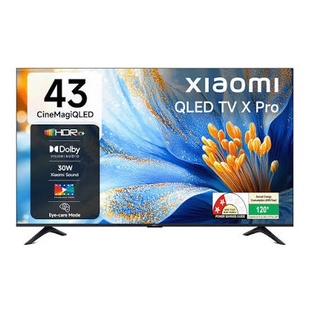

Mi TV Repair in Mumbai
Mi LED and Smart TV repair enquiries, including power, display, sound and smart features. Tell us your model and the problem you're experiencing. We can discuss inspection and repair availability for your location.

Common Mi TV Problems
These are examples of issues customers ask us about. Repair options depend on diagnosis, TV model and spare-part availability.
- Mi TV not powering on
- Picture or LED backlight issues
- No sound or distorted audio
- Smart TV apps, Wi-Fi or startup issues
- HDMI, display or main-board faults
How to request service
Share your TV model, the symptoms and your Mumbai location. We will discuss technician availability and any applicable inspection or repair charges before proceeding.
Other TV services
Mi television types
Share your TV model number so we can check whether service is available for your particular set.
How your repair enquiry works
Tell us the problem
Send your Mi TV model, symptoms and Mumbai location.
Discuss inspection
We explain availability and applicable inspection or visiting charges.
Review repair options
After diagnosis, discuss feasible repairs, parts and estimated costs before approving work.
Mi TV repair FAQs
Answers to common questions before booking an independent TV repair enquiry.
Can you help with a Mi TV black screen?
Tell us the model and whether there is sound or a standby light. We can discuss diagnosis and technician availability.
Do you support Xiaomi and Redmi TV enquiries?
We accept enquiries for supported models, subject to inspection and parts availability.
Is HI TECH SERVICE an official Xiaomi service centre?
No. We are an independent repair provider and are not affiliated with Xiaomi or Mi.
Need help with your Mi TV?
Call or WhatsApp with your model number and a short description of the problem.
Independent Service Disclaimer
HI TECH SERVICE is an independent third-party appliance and TV repair provider. We are not affiliated with, endorsed by, or an authorized service centre of Mi or its manufacturer. Mi is a trademark of its respective owner and is used solely to identify the types of TVs customers may enquire about. Services are primarily for out-of-warranty products. Availability, diagnosis, repair charges and parts depend on the TV model and condition.